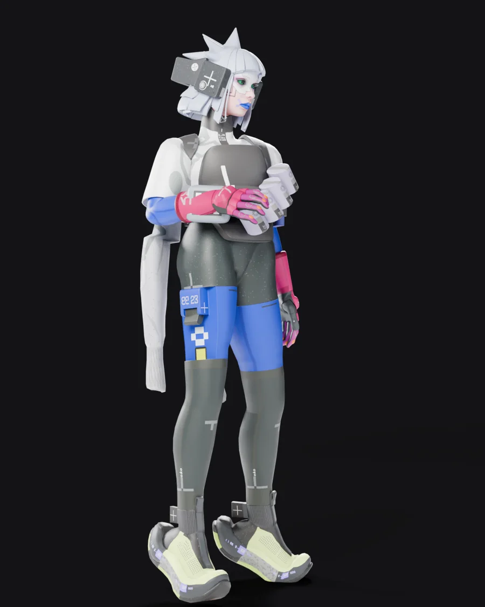
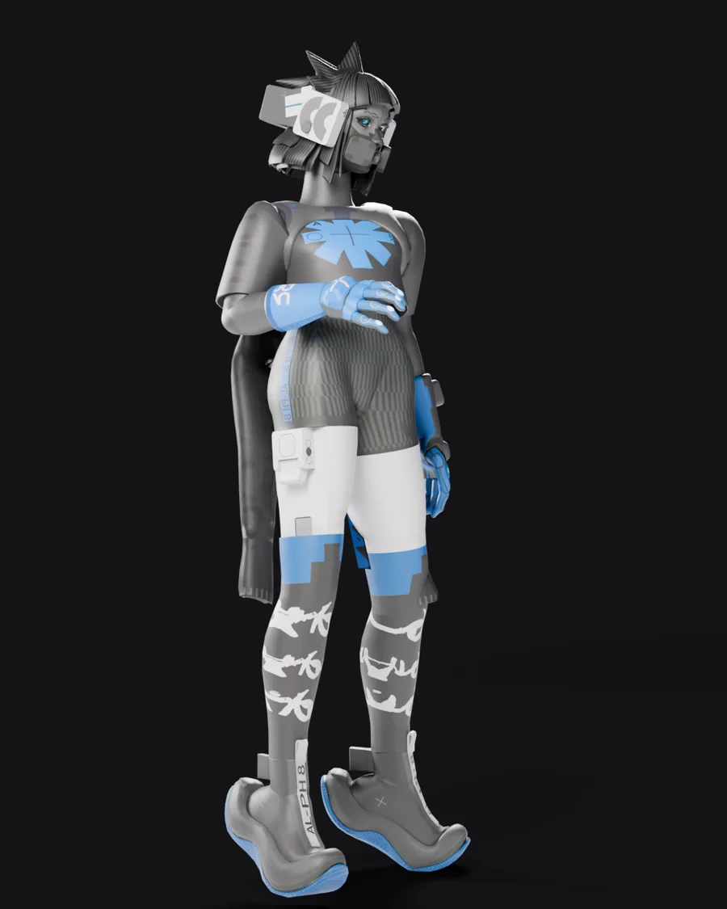
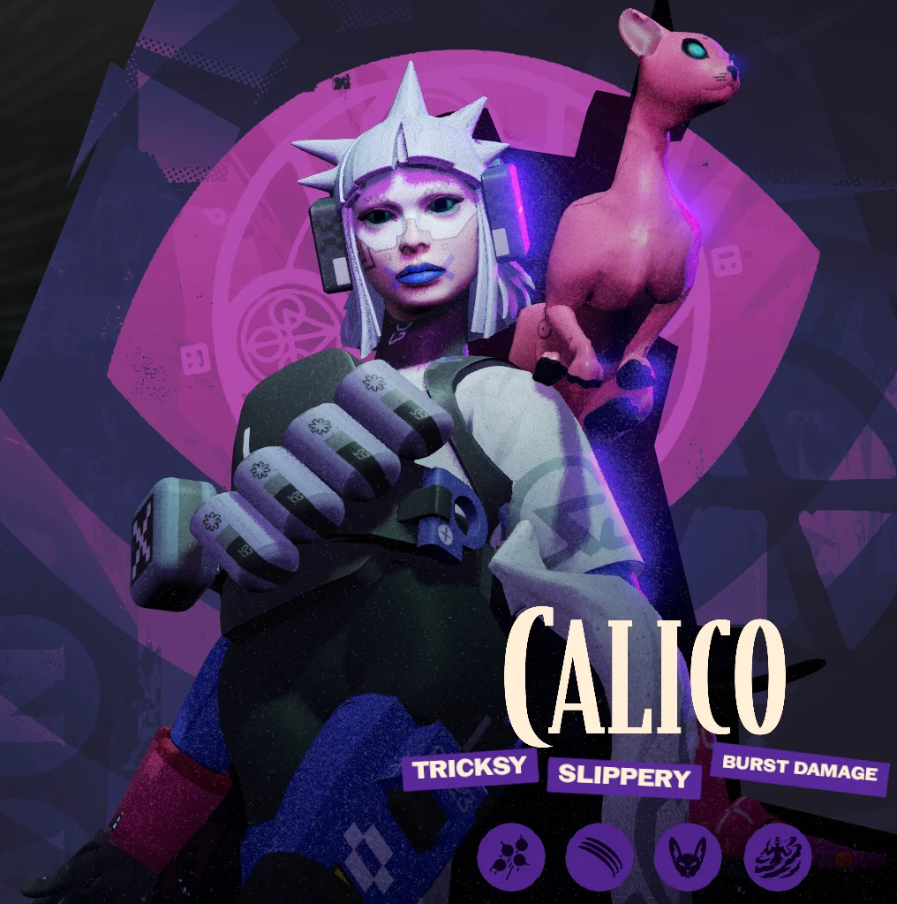
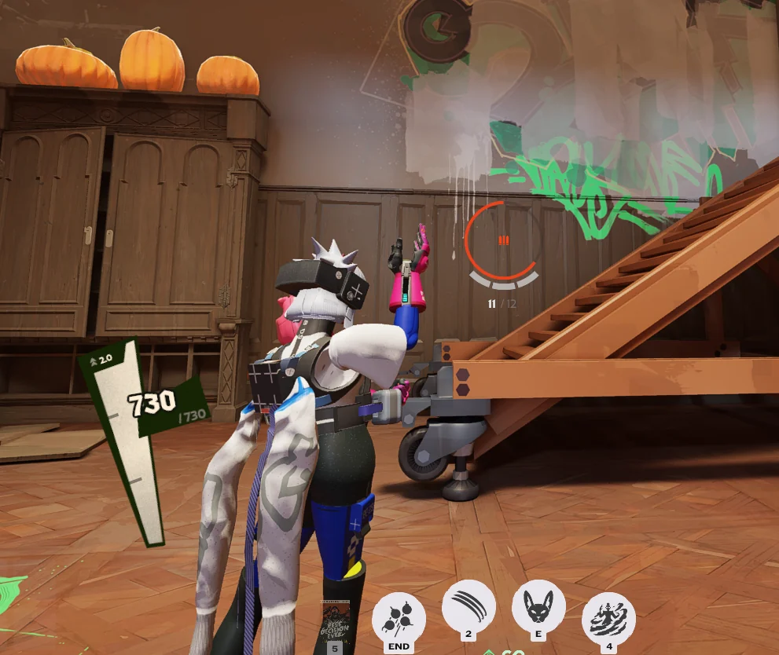
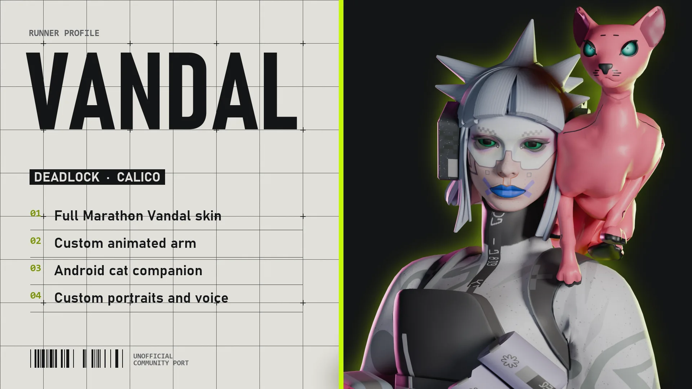
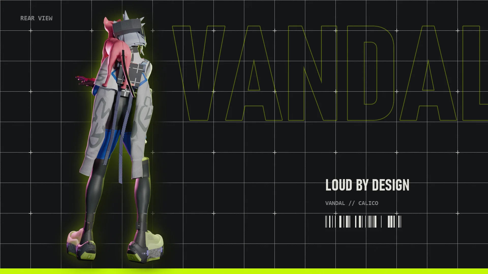
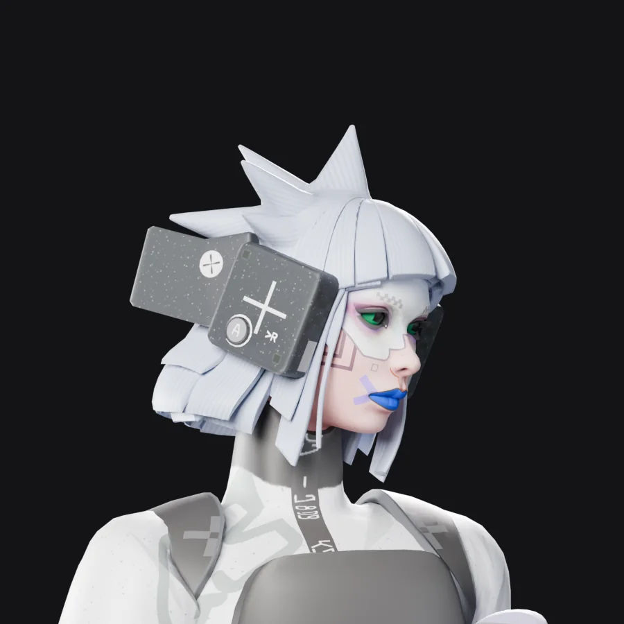
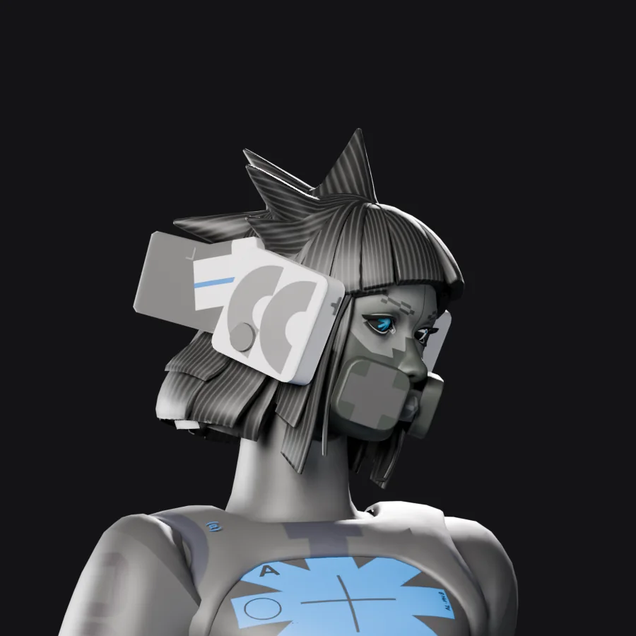

For Calico
Marathon Vandal for Calico
Turns Calico into Vandal, the Marathon runner, with her arm cannon, Bingus the android cat, portraits and voice.
Download Vandal
Also as Null Tempest
Pick a look

Null Tempest
Her PlayStation promo outfit in grey and blue, with a face mask and a blue arm cannon.
DownloadWhat's in it
- Full Vandal character model and textures
- Two looks to pick from: Default and Null Tempest
- Arm cannon with its own reload animation
- Bingus, an android cat, in place of Ava
- Vandal hero portraits
- Vandal voice lines in place of Calico's
Install in three steps
-
Download the zip
Click Download Vandal. Keep the file zipped. You don't need to open it.
-
Add it to Deadlock Mod Manager
Open Deadlock Mod Manager and click Add Local Mod in the sidebar. Drag the zip onto the drop box, type a name like "Vandal", then click Add.
No mod manager yet? It's free at deadlockmods.app.
-
Enable it and play
Go to Mods Library, find Vandal and click Enable. Start the game with Launch modded.
Each look is its own mod, and only one Calico skin can be on at a time. Enable one look and disable any other Calico skin.
More help
Install without a mod manager
- Unzip the download. Inside is one file: pak01_dir.vpk.
- In Steam, right-click Deadlock and choose Manage, then Browse local files.
- Open game\citadel. If there's no addons folder, create one.
- Move pak01_dir.vpk into addons. If a file with that name is already there, rename yours to the next free number instead: pak02_dir.vpk, pak03_dir.vpk and so on.
- One-time setup: open game\citadel\gameinfo.gi in Notepad, find SearchPaths, and add the highlighted line right under Game_Language. Save the file.
SearchPaths { Game_Language citadel_*LANGUAGE* Game citadel/addons Mod citadel ...
Deadlock updates can reset gameinfo.gi. If mods stop loading after a patch, add the line again. Deadlock Mod Manager does this for you automatically.
Update to a new version
- Download the new zip from this page.
- In Deadlock Mod Manager, open Mods Library, open Vandal and click Delete Mod to remove the old version.
- Add the new zip with Add Local Mod and enable it, the same as the first install.
Installed by hand? Replace your pakNN_dir.vpk in addons with the one from the new zip, keeping the same file name.
Mods added with Add Local Mod don't get update alerts in the mod manager, so check this page now and then.
Uninstall
In Deadlock Mod Manager, click Disable to turn it off, or Delete Mod to remove it completely. Installed by hand? Delete the pakNN_dir.vpk you added to addons.
The skin doesn't show up in game
- Make sure Vandal is enabled in Mods Library and that no other Calico skin is enabled.
- Close Deadlock completely and start it again with Launch modded. Mods load when the game starts.
- Still nothing? In Deadlock Mod Manager, disable all mods, delete Vandal, add the zip again and enable only this mod.
I installed it from GameBanana before
Please replace it with the version on this page. The first version could make other players' Calicos T-pose or crash the game in matches. Delete the old one in Deadlock Mod Manager, then follow the three steps above.
Can other players see it?
No. Mods only change your own game. You'll see every Calico as Vandal, and other players see whatever they have installed. It changes looks and sounds only, nothing about gameplay.
Gallery












Changelog
1.3
- New look: Null Tempest, her PlayStation promo outfit, with a blue arm cannon to match. Its sleeves swing like the Default look.
- The Default look is the same as in 1.2.
1.2
- The arm cannon now keeps its shape in every animation, including reloading.
- Fixed pieces of the arm flashing across the screen when you start or stop shooting.
- The cannon is now always out. The glove from 1.0 no longer swaps in out of combat.
1.1
- Fixed other players' Calicos T-posing, teleporting or crashing the game for anyone with the mod installed.
1.0
- First release.
Credits
Made by Vyrena. This mod was made with heavy AI assistance.
Unofficial community port. Marathon, its characters and assets belong to Bungie. Deadlock belongs to Valve. Not affiliated with or endorsed by either.
Found a problem? Report it on GitHub.
Also available
Thief for Yamato